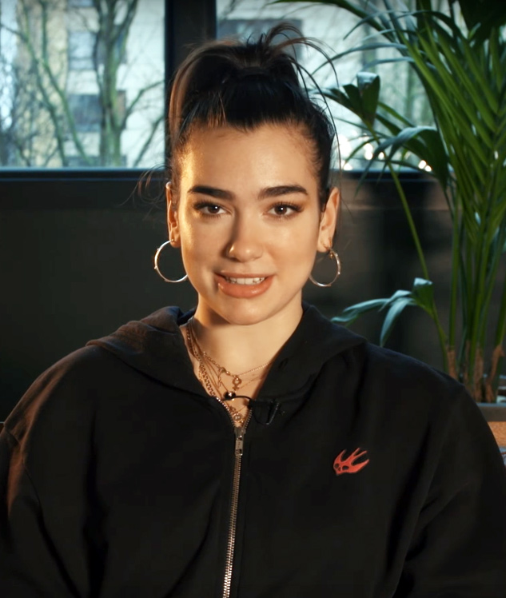
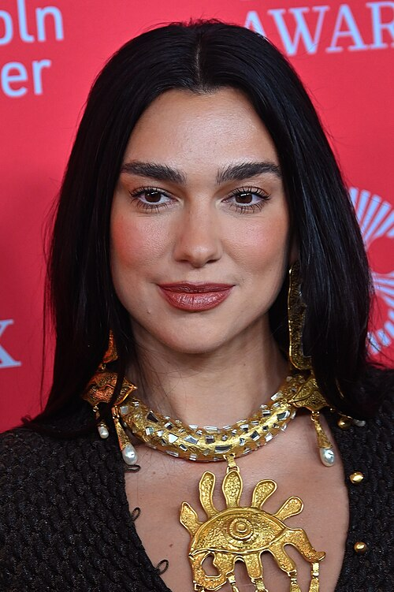
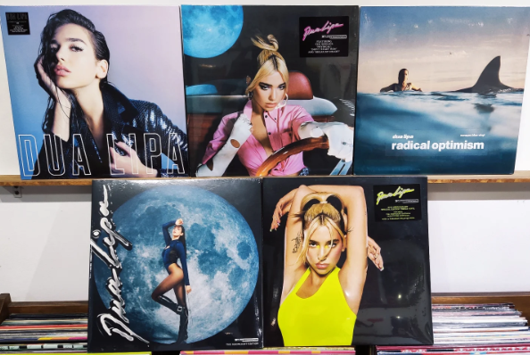
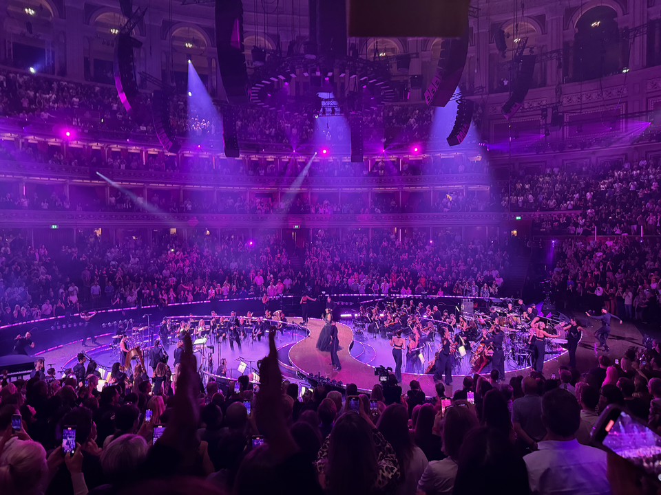

Dua Lipa, una estrella del pop internacional
Dua Lipa es una cantante, compositora y modelo británica de ascendencia albanokosovar. Se ha convertido en una de las figuras más reconocidas del pop contemporáneo gracias a su voz grave, sus ritmos bailables y su estilo musical influenciado por la música disco, el dance-pop y la música electrónica.

Biografía
Dua Lipa nació el 22 de agosto de 1995 en Londres, Inglaterra. Sus padres son de origen albanokosovar y desde pequeña estuvo rodeada de influencias musicales. Durante su adolescencia vivió un tiempo en Kosovo y posteriormente regresó a Londres para perseguir su sueño de convertirse en cantante. Comenzó compartiendo versiones de canciones en internet y, en 2015, firmó un contrato discográfico con Warner Records. Su carrera despegó internacionalmente con canciones como "Be the One" y "New Rules".

Discografía
• 1. Dua Lipa (2017) • Estilo: Pop, dance-pop y electropop. Su álbum debut combina sonidos electrónicos con influencias del R&B y el synth-pop. Sus letras exploran las relaciones, el amor, la independencia y las rupturas sentimentales. Fue el proyecto que la dio a conocer internacionalmente. • Canciones clave: "New Rules", "IDGAF", "Be the One".
• 2. Future Nostalgia (2020) • Estilo: Dance-pop, disco y synth-pop. Un álbum inspirado en los sonidos de las décadas de 1970, 1980 y 1990, combinados con una producción moderna. Se caracteriza por sus ritmos energéticos, sintetizadores y una estética retrofuturista. Recibió el Grammy al Mejor Álbum Vocal Pop en 2021. • Canciones clave: "Don't Start Now", "Physical", "Levitating".
• 3. Radical Optimism (2024) • Estilo: Pop, dance-pop y psicodelia. Su tercer álbum de estudio explora una atmósfera más relajada y psicodélica, con influencias de la música británica y sonidos electrónicos. Sus canciones hablan sobre el amor, la confianza y la capacidad de afrontar los cambios. • Canciones clave: "Houdini", "Training Season", "Illusion".

Hits
• "New Rules" (Dua Lipa, 2017) – Una de las canciones que impulsó su carrera internacional. Su letra transmite un mensaje de independencia después de una ruptura.
• "One Kiss" (con Calvin Harris, 2018) – Una colaboración de música house y dance-pop que alcanzó gran éxito internacional.
• "Don't Start Now" (Future Nostalgia, 2019) – Un tema disco-pop que representa una nueva etapa musical en su carrera.
• "Levitating" (Future Nostalgia, 2020) – Una canción de pop y disco con influencias retro que se convirtió en uno de sus mayores éxitos.
• "Cold Heart" (con Elton John y PNAU, 2021) – Una colaboración que combina elementos de canciones clásicas de Elton John con producción electrónica.
• "Dance the Night" (Barbie The Album, 2023) – Una canción disco-pop creada para la película Barbie, que recupera la estética musical de los años setenta.
• "Houdini" (Radical Optimism, 2023) – Un sencillo con influencias electrónicas y psicodélicas que presentó la nueva etapa de su carrera.
Estilo musical y presentaciones
Estilo musical
• Dance-pop: Uno de los elementos principales de su música, caracterizado por ritmos bailables y producciones electrónicas.
• Disco: Una influencia fundamental en Future Nostalgia, con bajos marcados, sintetizadores y sonidos inspirados en los años setenta.
• Synth-pop: Utiliza sintetizadores y elementos electrónicos que aportan una identidad moderna y retro a sus canciones.
Giras musicales
• The Self-Titled Tour (2017-2018): Su primera gira internacional, realizada para promocionar su álbum debut.
• Future Nostalgia Tour (2022): Una gira mundial caracterizada por su estética retrofuturista, coreografías y espectáculos visuales.
• Radical Optimism Tour (2024-2025): Una gira internacional que acompañó el lanzamiento de su tercer álbum de estudio.
Presentaciones destacadas
• Grammy Awards (2019): Ganó los premios a Mejor Artista Nuevo y Mejor Grabación Dance por "Electricity", junto a Silk City.
• Studio 2054 (2020): Un concierto virtual con invitados especiales y una producción inspirada en la estética de los clubes nocturnos.
• Glastonbury (2024): Encabezó el escenario principal del festival, ofreciendo uno de los conciertos más importantes de su carrera.
• Royal Albert Hall (2024): Presentó versiones especiales de sus canciones acompañada por una orquesta y un coro.

El legado de Dua Lipa
El legado de Dua Lipa se encuentra en su contribución a la evolución del pop moderno y en la recuperación de sonidos disco y electrónicos de décadas anteriores. Con su estilo musical, su identidad visual y sus presentaciones en grandes escenarios, ha logrado consolidarse como una de las artistas más influyentes de su generación. Su música ha conectado distintas generaciones y ha demostrado que los sonidos del pasado pueden reinventarse para el público actual.